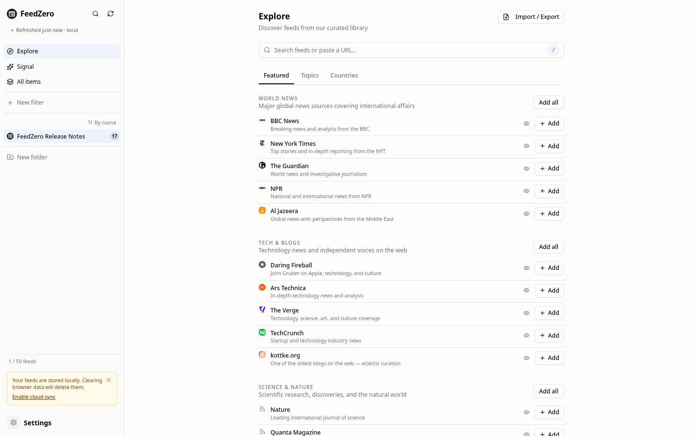

Free
$0 · forever
Up to 50 feeds, with encrypted sync across devices. The full reader: keyboard shortcuts, full-text extraction, OPML with folders, 1,300+ feeds to browse, starring, offline reading, encrypted local storage. No card, no email.
FeedZero is an open-source RSS reader for your browser. It pulls blogs, news sites, newsletters, and podcasts into one inbox, in the order they were published. No account, no ads, no tracking.
Open the app, it's free Try Personal, 30 days free
Free, sync included·Up to 50 feeds·1,300+ feeds to browse·Open source under AGPL-3.0

Almost every site on the internet (blogs, news outlets, YouTube channels, podcasts, even most newsletters) publishes a public list of its new posts. The list is called a feed. FeedZero subscribes to those feeds and pulls everything into one inbox, sorted by date.
That's it. No timeline algorithm reordering posts. No "for you" page. No promoted content. You pick what you follow, and you see everything they publish, in the order they wrote it.
If you've used Feedly, Inoreader, NetNewsWire, or Reeder, FeedZero is the same idea. The differences: it runs in your browser, it's open source, and your data stays on your device.
Open my.feedzero.app and start reading. No email, no password, no install. Your subscriptions and reading history live on your device, encrypted. If you want to read across devices, turn on encrypted sync. It's included on every tier and doesn't need an account. Or run the whole thing on your own server. The code is open source under AGPL-3.0.
Currently in alpha (v0.11.0). Used daily by the people building it.
Most of FeedZero is free, including encrypted sync across devices. The Personal plan lifts the 50-feed cap and adds auto-organize, smart filters, and offline prefetch of starred articles. It's free for 30 days, and unlocked by default if you self-host.
Blogs, news sites, podcasts, YouTube channels, Substacks, GitHub releases. If it has a feed (most do), FeedZero reads it. Paste the address and the app finds the right URL automatically.
Turn on sync and your subscriptions, folders, and read state follow you to every device. Encryption happens in the browser using a four-word passphrase. The server only ever sees ciphertext, so we can't read your data. Sync is included on every tier, no account, no license.
Feeds load from memory. Articles switch instantly. Move with j/k, jump feeds with u, open the original with o. Or just click everything. Both work the same way.
Coming from Feedly, Inoreader, or NetNewsWire? Import your OPML and the folders are preserved, not flattened. Want to leave? Export the same way. Your subscription list belongs to you.
Hit s on any article to save it. Starred items land in a virtual feed in the sidebar, sorted by date. It's your "read later" pile, and it doesn't get lost in the flow. With sync (free), starred items follow you across devices. On Personal, FeedZero also downloads the full text of starred articles in the background, so the train ride home is covered.
Click the wand and FeedZero groups your feeds into topic folders (tech, news, science, design, sports, and more) based on what each feed actually publishes. Tweak the result, or undo it. No AI, no round trip to a server.
Build a rule once and FeedZero keeps a live feed of every matching article. "AI news, this week, unread." "Anything from these three feeds I starred." "Everything tagged 'launch'." Stack conditions, nest them with AND/OR/NOT, sync them across devices. Like iTunes Smart Playlists, for your reading.
⊃ "AI"
Not sure what to follow? Browse a curated catalog: tech, world news, science, culture, finance, sports, design. Organized by topic and country. One click to subscribe.
Some feeds publish only the first paragraph to drive clicks back to their site. FeedZero pulls the full article so you stay in the reader. No clickbait detour.
Already-loaded articles stay readable even without a connection. Subway, plane, the back of the cafe with bad Wi-Fi.
A swipeable bottom drawer for everything, snap-scroll between the article list and the reader, safe-area support for the notch and Dynamic Island.
No email, no password, no "sign in with Google." Open the app and start reading. Sync is account-free too: a four-word passphrase, not a login.
No ads, no analytics SDKs, no Google Tag Manager, no Facebook Pixel. We don't log what you read or who you are. The privacy policy says it because the code does it.
Clone the repo, copy .env.example, run ./scripts/feedzero up. Docker, Caddy, automatic TLS. amd64 and arm64 images on GHCR, including Raspberry Pi.
Every claim on this page is checkable in the source. The code is on GitHub under AGPL-3.0-or-later. Read it, fork it, run your own, send a patch.
Curious yet? Open the app. It's free, no sign-up. You'll be reading in 30 seconds.
Open the app →Every reader on this list does the same core job: subscribe to feeds, show new posts. The differences are platform, price, privacy, and how far the power tools go. Footnoted sources at the bottom.
| FeedZero | Feedly | Inoreader | Reeder | NetNewsWire | |
|---|---|---|---|---|---|
| Platform & money | |||||
| Runs on | Any browser | Web, iOS, Android | Web, iOS, Android | Apple only | Apple only |
| Free tier | with ads | with ads | |||
| Paid plan starts at | $5/mo | $6/mo* | $9.99/mo* | $0.99/mo or one-time | Free |
| Open source | AGPL-3.0 | MIT | |||
| Self-host the server | —native app, no server | ||||
| Privacy | |||||
| Works without any account | email + password | email + password | Apple ID + sync provider | Apple ID + sync provider | |
| End-to-end-encrypted sync, included | —via provider you choose | —via provider you choose | |||
| No ads, no third-party trackers | |||||
| Reading & organising | |||||
| Full-text article extraction | Pro tier | Pro tier | |||
| Offline reading with full-text prefetch | Personal: starred + read-often | Pro: offline mode only | Pro: offline mode | ||
| Star, with offline copy of starred | Personal | Pro Save for Later | |||
| One-click auto-organize folders | Personal | via Leo AI | |||
| Folder colors + custom feed sort | Pro themes | sort only | sort only | ||
| Power tools | |||||
| Smart filters (saved rule feeds) | Personal | Pro+ tier only | Pro tier | ||
| Per-feed rules (auto-actions on new articles) | Personal | Pro+ Mute Filters | Pro tier | ||
| Bridges — paste a Reddit, GitHub, Mastodon, or YouTube URL | Personal, by URL pattern | YouTube + Reddit | YouTube + Reddit | YouTube only | |
| Signal — trends across your feeds, on-device, no AI | Personal | Leo, cloud AI | cross-user Trending | ||
*Cheapest paid tier on an annual plan, checked 2026-05; competitor pricing and feature tiers change — verify on their sites before deciding. "Apple only" means macOS, iOS, and iPadOS; FeedZero runs in any modern browser including Safari, Firefox, Chrome, and Edge. FeedZero is open source under AGPL-3.0; all other product names are trademarks of their respective owners.
Free in your browser, with encrypted sync across devices included. Unlimited feeds, auto-organize, smart filters, and offline prefetch are on the Personal plan: free for 30 days, then $5 a month. Or self-host the whole thing for free.
Free
$0 · forever
Up to 50 feeds, with encrypted sync across devices. The full reader: keyboard shortcuts, full-text extraction, OPML with folders, 1,300+ feeds to browse, starring, offline reading, encrypted local storage. No card, no email.
Personal
30 days free · then $5/mo USD
Everything in Free, plus unlimited feeds, auto-organize folders, smart filters, and offline prefetch of starred articles. Cancel anytime during the trial; no charge until day 31.
Self-host
$0 · AGPL-3.0-or-later
Your server, your data. Every Personal feature unlocked: unlimited feeds, auto-organize, smart filters, offline starred. Sync runs on your own server. No license check, no kill switch, no phoning home. Three commands to deploy.
Already a Personal subscriber? Open the app and sign in with your license. One purchase, every device. · See the full comparison →
The reader runs in your browser, which costs us nothing, so it's free. Cross-device sync is free too, because reading across devices shouldn't sit behind a paywall. The Personal plan covers the heavier features: auto-organize, smart filters, offline prefetch of starred articles, and the lifted 50-feed cap.
The $5 covers it. No VCs, no ads, no upsells, no data sales. If you'd rather not pay, self-host. It's the same code, AGPL-licensed, free.
The reader keeps working. Everything you read locally stays local. Sync keeps working too; it's free for everyone. You lose auto-organize, smart filters, offline prefetch of starred articles, and the 50-feed cap comes back. You can re-subscribe any time, or export to OPML and walk away.
Yes. Encryption happens in your browser using a four-word passphrase that only you know. The server never sees that passphrase. It stores a blob of ciphertext that it has no way to decrypt: not for support, not for a subpoena, not for us.
Lose the passphrase and your cloud data is gone. There is no reset. That's the trade-off for the server never holding the key.
Yes. One Personal subscription covers every device you use. Open the app on a new laptop or phone, enter your sync passphrase to restore your subscriptions and read state, then paste your license token to unlock the Personal features. No per-device fees, no seat limits.
No catch. The free tier is the full reader: same UI, same speed, same keyboard shortcuts, same OPML export, same encrypted sync across devices. You're capped at 50 feed subscriptions; beyond that, subscribe or self-host. No card, no email, no "free for the first month then we charge you."
Because every link you click is shaped by someone else's algorithm. RSS is the opposite: you pick what you follow, you see everything they publish, in the order it happened. No promoted posts. No "you might also like." No quietly-deprecated emails. It is a small, stubborn corner of the internet that still works the way you'd expect.
Export your subscriptions to OPML (one click, in Settings) and import them into any other reader. Or spin up the open-source build on your own server: the code is AGPL, the Docker image is on GHCR, the self-hosting guide is in the repo. The format is yours to take with you.
Your subscriptions and reading history live in your browser, encrypted at rest. When you turn on sync, the server stores an encrypted vault. The keys never leave the browser, so the server holds ciphertext and nothing else.
There are no third-party trackers, no ads, no analytics SDKs, no crash reporters. We count anonymous usage to know what's working. We don't log what you read or who you are. The server does see the addresses of the feeds you subscribe to, because it fetches them on your behalf. If that bothers you, self-host. The code is open source and reproducible.
For the curious: local storage uses AES-GCM-256 with PBKDF2 key derivation at 600,000 iterations. Sync derives keys in the browser from a four-word passphrase generated from the EFF wordlist. Full threat model and known limitations are in SECURITY.md.
Every claim on this page is auditable. The source is on GitHub under AGPL-3.0-or-later. Read it. Audit it. Fork it. Run your own copy. Send a patch.
Self-hosting takes three commands once Docker is installed:
$ git clone https://github.com/forcingfx/feedzero.git $ cd feedzero && cp .env.example .env $ ./scripts/feedzero up
Caddy handles automatic TLS, multi-arch images (amd64 + arm64) ship from GHCR on every release, and day-2 ops (update, backup, restore, logs, doctor) are one command each. Full walkthrough in the self-hosting guide.
What changed in each release, newest first. Also available as an Atom feed.
Signal surfaces what is loud across your feeds entirely on-device. Cloud sync is now free for everyone. Per-feed rules act on new articles automatically, feeds refresh in the background, and non-RSS sources work by pasting their URL.
Covered by N outlets badge. Story rows show a peek preview on hover or tap before opening the full reader, and the back button returns to Signal rather than the feed list. It unlocks once the local corpus reaches 100 articles and runs with no external API or LLM. Available on the Personal tier.Prefetch full text toggle that extracts the 20 most recent articles on each refresh for offline reading. Feeds you read often (10 or more articles in the past 30 days) prefetch automatically, with the selection computed on-device from the encrypted vault. Available on the Personal tier.Refresh all entry in the navigation drawer, both showing a spinning Refreshing state while they run.Refresh now and Clear cached articles actions now disable while running, spin their icon, and confirm with a toast.Self-host deploys in three commands via Docker. The client stops loading Vercel Speed Insights. Error logs stop emitting feed URLs. The repository ships an explicit AGPL-3.0-or-later LICENSE.
cp .env.example .env, edit one value, run ./scripts/feedzero up. Day-2 ops (update, backup, restore, logs, doctor) wrap the underlying docker-compose commands so self-hosters do not memorize them.scripts/feedzero (POSIX shell) and scripts/feedzero.ps1 (PowerShell) so the same surface works on macOS, Linux, WSL2, Git Bash, and native Windows.docs/self-hosting.md. Covers Docker installation on each OS, public-hostname deploys via Let's Encrypt, LAN-only deploys with self-signed certs (with per-OS instructions for trusting Caddy's root CA), day-2 operations, and the seven failures self-hosters actually hit.ghcr.io/forcingfx/feedzero on every version tag. Raspberry Pi self-hosters no longer rebuild from source on updates.LICENSE file and a matching SPDX identifier in package.json. Section 13 (the network-use clause) means anyone running a modified FeedZero as a public service must offer their users the modified source.isXxxPage flag./api/feed or /api/icon emitted the target URL into stdout, where it landed in operator-readable log retention. The privacy-floor logger (logError) now handles both call sites with an opaque trace id the user can quote in support.@vercel/speed-insights client SDK. The README's headline privacy promise (“No telemetry. No analytics. No crash reporting. No third-party tracking.”) now matches the shipped code. No page-view or Web-Vitals beacons leave the browser.The sidebar's settings dropdown collapsed into a single button opening a unified five-tab dialog. License holders can now log in to a fresh device via a two-step wizard. OPML import and export preserve folder organization.
Flooding feeds no longer drown out everything else in aggregated views, a Restore-from-cloud button recovers from drifted local state, and a cross-device sync race that left Device B with the wrong feed list is fixed.
Restore from cloud button to the Data & Storage dialog. Replaces local feeds and articles with the cloud vault without deleting and recreating the vault, which is the recovery path when a device's local state drifts from what the cloud knows.Three production bugs fixed across cloud sync, the public stats page, and mobile dialogs. Server-side storage consolidated onto a single backend. Every error response now carries a trace identifier for support.
429 Retry-After per RFC 6585 when exceeded.req_ followed by 8 hex characters) to every non-2xx response from the monetization endpoints. Quote it in a support report and the issue can be looked up in the runtime logs.SMOKE_TESTS=1 npx vitest run tests/smoke/. The smoke layer is now a required phase of the standard development workflow.[object Object] instead of the encrypted payload. The server was storing vaults correctly all along; only the read path was broken. Existing vaults are unaffected and now load correctly.A latent bug in the new-user initialization path that could leave the app marked as onboarded after a failed first init is fixed.
A persistent swipeable bottom drawer replaces the offcanvas mobile sidebar, navigation pills handle prev/next on every device, and a public /stats dashboard exposes anonymous usage numbers.
/stats. Shows total vaults, total feeds tracked, and the top 100 feeds by request volume. No accounts, no personal data, no login.Three-panel resizable desktop layout, always-visible prev/next navigation, pull-to-advance on mobile, folder colors, and keyword-based auto-organize.
display:table wrapper that breaks text wrapping) with a native overflow-y-auto container.Organize feeds into collapsible folders, read all items in a folder at once, and swipe between articles on mobile.
articlesByFeedId) instead of a separately stored counter. Badges update immediately after adding a feed from the Explore tab.:focus-visible so keyboard users still see the dots when tabbing.The release notes are now an Atom feed that any RSS reader can subscribe to.
Removed the desktop header bar. Added per-feed unread counts and in-memory article preloading.
Tracking pixels and URL tracking parameters are removed from feed content before it reaches the browser.
utm_*, fbclid, gclid, and around 20 similar parameters are removed from links inside article content.Fixes for favicon loading, feed refresh, and error messages.
Palette, transition, and typography adjustments.
prefers-reduced-motion media query is honored.A catalog of around 1,000 feeds, vim-style keyboard shortcuts, end-to-end encrypted sync, and OPML import/export.
j/k for next/previous article, Enter to add a feed, Space to scroll, h for full text view, o to open the original.The initial alpha.